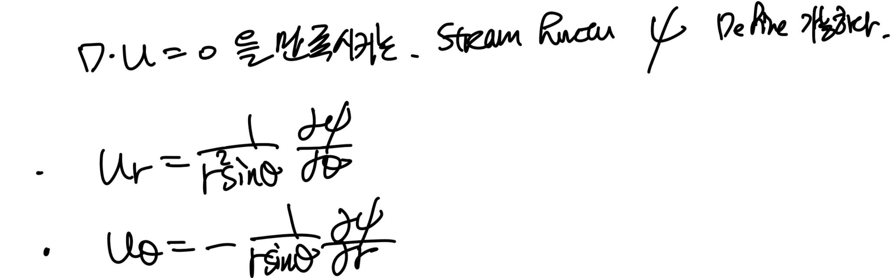
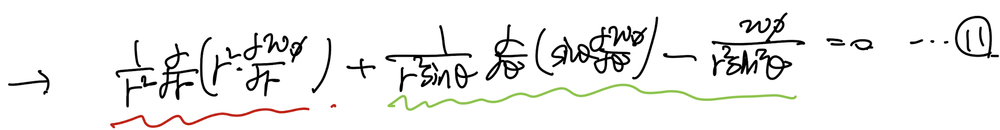
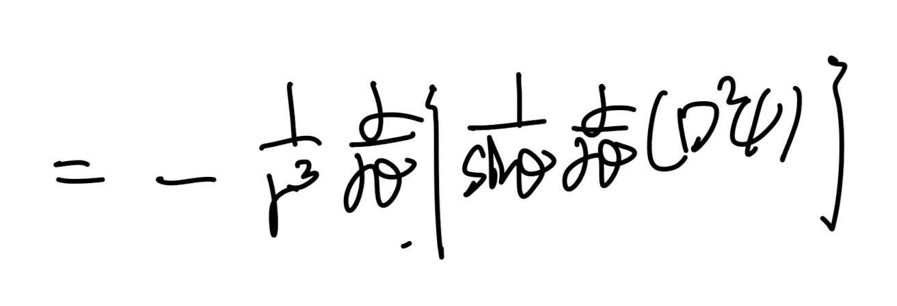
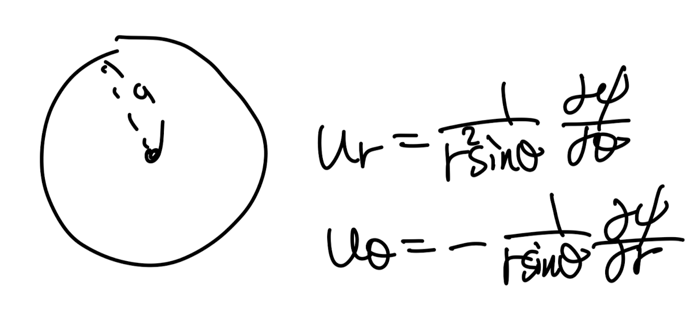
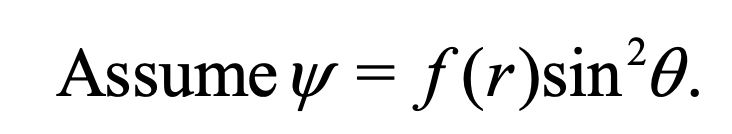
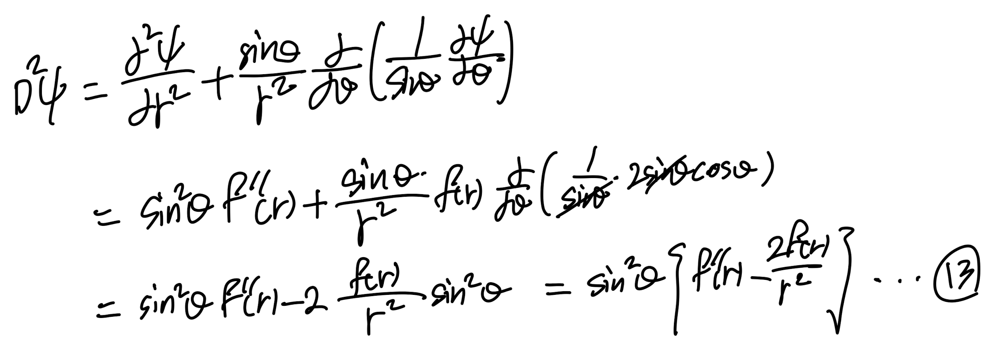
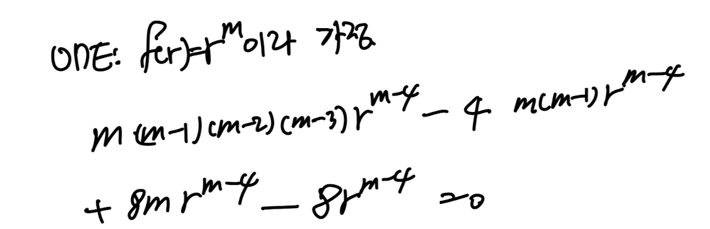
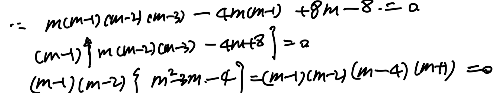

<!DOCTYPE html>
<html lang="ko">
<head>
  <meta charset="utf-8">
  <meta name="viewport" content="width=device-width, initial-scale=1">
  <title>Ch5 Low Reynolds number flow - Stokes Flow part2 | Sehyeog Kim</title>
  <link rel="stylesheet" href="../../../assets/css/style.css">
</head>
<body>
  <!-- Mobile header -->
  <header class="mobile-header">
    <span class="site-title">Sehyeog Kim</span>
    <button class="menu-toggle" aria-label="Menu">&#9776;</button>
  </header>
  <div class="sidebar-overlay"></div>

  <div class="site-wrapper">
    <!-- Sidebar -->
    <aside class="sidebar">
      <div class="sidebar-bg">
        
      </div>
      <div class="sidebar-profile">
        
        <h1 class="profile-name">Sehyeog Kim</h1>
        <p class="profile-bio">AI &amp; Computational Engineering<br>Knowledge Base</p>
        <div class="profile-links">
          <a href="https://github.com/Sehyeogkim" target="_blank" rel="noopener">
            <svg viewBox="0 0 16 16" width="16" height="16" fill="currentColor"><path d="M8 0C3.58 0 0 3.58 0 8c0 3.54 2.29 6.53 5.47 7.59.4.07.55-.17.55-.38 0-.19-.01-.82-.01-1.49-2.01.37-2.53-.49-2.69-.94-.09-.23-.48-.94-.82-1.13-.28-.15-.68-.52-.01-.53.63-.01 1.08.58 1.23.82.72 1.21 1.87.87 2.33.66.07-.52.28-.87.51-1.07-1.78-.2-3.64-.89-3.64-3.95 0-.87.31-1.59.82-2.15-.08-.2-.36-1.02.08-2.12 0 0 .67-.21 2.2.82.64-.18 1.32-.27 2-.27.68 0 1.36.09 2 .27 1.53-1.04 2.2-.82 2.2-.82.44 1.1.16 1.92.08 2.12.51.56.82 1.27.82 2.15 0 3.07-1.87 3.75-3.65 3.95.29.25.54.73.54 1.48 0 1.07-.01 1.93-.01 2.2 0 .21.15.46.55.38A8.013 8.013 0 0016 8c0-4.42-3.58-8-8-8z"/></svg> GitHub
          </a>
        </div>
      </div>
      <nav class="sidebar-nav">
        <a href="/" class="nav-item nav-home">Home</a>
        <span class="nav-label">Categories</span>
        <a href="/blog/agentic-ai/" class="nav-item">Agentic_AI<span class="nav-post-count">8</span></a>
        <a href="/blog/blood-flow-and-metabolism/" class="nav-item">Blood-Flow-and-Metabolism<span class="nav-post-count">12</span></a>
        <a href="/blog/cardiovascular-diseases/" class="nav-item">CardioVascular-Diseases<span class="nav-post-count">8</span></a>
        <a href="/blog/computational-linear-algebra/" class="nav-item">Computational-Linear-Algebra<span class="nav-post-count">15</span></a>
        <a href="/blog/continuum-mechanics/" class="nav-item">Continuum-Mechanics<span class="nav-post-count">9</span></a>
        <a href="/blog/deep-learning/" class="nav-item">Deep-learning<span class="nav-post-count">14</span></a>
        <a href="/blog/finite-element-method/" class="nav-item">Finite-Element-Method<span class="nav-post-count">1</span></a>
        <a href="/blog/fluid-mechanics/" class="nav-item">Fluid-Mechanics<span class="nav-post-count">18</span></a>
        <a href="/blog/gas-dynamics/" class="nav-item">Gas-Dynamics<span class="nav-post-count">24</span></a>
        <a href="/blog/heat-transfer/" class="nav-item">Heat-transfer<span class="nav-post-count">8</span></a>
        <a href="/blog/math/" class="nav-item">math<span class="nav-post-count">0</span></a>
        <a href="/blog/numerical-heat-transfer-and-fluid-flow/" class="nav-item">Numerical-Heat-transfer-and-Fluid-flow<span class="nav-post-count">14</span></a>
        <a href="/blog/solid-mechanics/" class="nav-item">Solid-Mechanics<span class="nav-post-count">25</span></a>
        <a href="/blog/thermodynamics/" class="nav-item">Thermodynamics<span class="nav-post-count">14</span></a>
        <a href="/blog/viscous-flow/" class="nav-item active">Viscous-Flow<span class="nav-post-count">28</span></a>
        <a href="/blog/과학/" class="nav-item">과학<span class="nav-post-count">26</span></a>
        <a href="/blog/취미/" class="nav-item">취미<span class="nav-post-count">2</span></a>
      </nav>
    </aside>

    <!-- Main content -->
    <main class="main-content">
      <div class="breadcrumb">  <a href="/">Home</a><span class="sep">/</span>  <a href="/blog/viscous-flow/">Viscous-Flow</a><span class="sep">/</span>  <span>Ch5 Low Reynolds number flow - Stokes Flow part2</span></div>
<a href="/blog/viscous-flow/" class="back-link">&larr; Back to Viscous-Flow</a>
<div class="page-header"><h1>Ch5 Low Reynolds number flow - Stokes Flow part2</h1></div>
<div class="post-meta"><span class="meta-item"><span class="meta-label">Date:</span> 2024-11-26</span><span class="meta-item"><span class="meta-label">Category:</span> Viscous-Flow</span><span class="meta-item"><span class="meta-label">Source:</span> <a href="https://jeffdissel.tistory.com/m/133" target="_blank" rel="noopener">link</a></span></div>
<article class="post-content"><p>Ch5 Low Reynolds number flow - Stokes Flow part2<br />
https://jeffdissel.tistory.com/132<br />
Ch5 Low Reynolds number flow - Stokes Flow part1<br />
ch4에서는Laminar flow,흐름이 uniform한 유체의흐름에 대해서 다루어 보았다. 이번에는Reynolds number 인 상황에서 유체의 흐름이 어떤 특징을가지는 지를 살펴보자. 'Reynolds 수가 작다'라는 말은밑<br />
jeffdissel.tistory.com<br />
(지난포스터 무조건 꼭 참고해주세요.)<br />
지난시간에 Stokes flow의 특징에 대해서 설명했었고,<br />
Navieres Stokes 방정식을 non dimensonalize 해주는 과정에서,<br />
점성과 압력항만이 흐름에 영향을 준다는<br />
사실을 통해서,<br />
7,8번 식을 유도하였습니다.<br />
<br />
이번시간에는 수학적으로,<br />
구 주변을 흐르는 스톡스 흐름을 계산해보자.<br />
<br />
Spherical coordinate system.<br />
<br />
여기서,<br />
Axisymmetric 가정<br />
을 통해 vorticity 벡터를 구해보면,<br />
<br />
Vorticity in spherical coordianate system<br />
우리는 pi 방향 vorticity만 존재함을 알 수 있다.<br />
<br />
속도를 하나의 스칼라 함수로 통일 하기 위해서,<br />
Stream function을 사용하자.<br />
<br />
이후, vorticity 식에<br />
streamfunction으로 치환한 속도들을<br />
대입해주자.<br />
<br />
편의상 편미분 항을 D^2 로 치환해주자.<br />
<br />
이후, 9번식을 spherical coordinate laplacian vector로 정리해주면,<br />
<br />
<br />
<br />
<br />
이번에는 Spherical coordinate Laplacian of Scalar이다<br />
(w: vector, w_φ: Scalar)<br />
<br />
<br />
이제 w_φ에 아까 전에 구한,<br />
Stream function과의 식을 대입해주자.<br />
<br />
(매우 복잡하므로)<br />
첫째항(빨간색)먼저 대입해주자.<br />
<br />
(생각보다 정리가 된다)<br />
이제 초록색(2,3번항) 대입해주자.<br />
(생각보다 굉장히 복잡함 주의)<br />
<br />
주황색 항<br />
을 따로 전개해보면, 귀산같이 식의 다른 빨강 초록과 소거된다.<br />
<br />
아주 신기하게 원래 식의 2nd term은 다음 식만 남는다.<br />
<br />
이제 맨처음 식의 첫째항과 합쳐주자.<br />
<br />
또, 귀신같이 우리가 치환했었던,<br />
D^2<br />
으로 귀결된다.<br />
<br />
우리가 정의했던 D^2<br />
우리가 지금 막 정리해서 구한것은,<br />
<br />
Stokes flow 모멘텀 보존식<br />
모멘텀 보존식에서 stream function식을 유도하였다.<br />
<br />
여기서 12번 식을 풀기위해서는 Stream function가<br />
어떤 함수의 형태인지를 먼저 알아야 한다.<br />
이를 위해서, 우리가 가지고 있는 정보<br />
Boundary condition을 분석해보자.<br />
<br />
defintion of Stream function<br />
먼저, r=a (구 고체 표면)에서<br />
1. no slip boundary condition<br />
u_r = 0 -&gt; d Ψ/d θ = 0<br />
u_ θ = 0 -&gt; d Ψdr = 0<br />
2. r -&gt; ∞ Free stream velocity(U)<br />
r이 무한으로 커 고체면에서 멀어지면, 점성효과는 0 이므로,<br />
Free stream velocity가 유체의 속도를 결정할 것이다.<br />
따라서, r, theat 방향 속도는 다음과 같다.<br />
<br />
Spherical Coordinate<br />
이 속도를<br />
위 definition of stream function에<br />
대입해주고, 적분을 통해서<br />
r -&gt; ∞일때, stream function을 유도할 수 있다.<br />
<br />
이를 근거로, Stream function을 다음과 같은 형태로<br />
가정한 후,<br />
우리가 알고 있는 식<br />
에 대입해주자.<br />
<br />
<br />
알고 있는 식.</p>
<h1>정리하고 가면,</h1>
<p>최종적으로 우리가 알고 싶은 것은,<br />
속도장이다. 즉,<br />
Ψ함수를 구성하는 f(r)을 찾는 것이 목표이다.<br />
이를 위해서 알고 있는 식 12번에 가정한<br />
Ψ = f(r) sin^2 θ 를 대입해주자.<br />
<br />
이후, 한번더 D^2을 해주자.<br />
<br />
쭉쭉 정리해주자.<br />
<br />
최종적으로 4차 ODE가 나오게 된다.<br />
여기서 f(r) 을 가정해준후,<br />
<br />
정리해주면,<br />
기가 막히게 m = 1,2,4,-1이 나온다.<br />
<br />
따라서, general solution f(r) 은 다음과 같고,<br />
이에 따라서<br />
Ψ : Stream function도 구할 수 있다.<br />
<br />
여기서 아까 r 이 무한일때 Boundary condition을 대입해주면,<br />
<br />
그리고, No slip boundary conditio을 통해서,<br />
남은 계수들도 얻을 수 있다.<br />
<br />
a,b 연립해주자.<br />
<br />
최종 계수까지 장착한 Stream function의 general solution<br />
<br />
한발짝만 . 더가보자.<br />
Stream function을 알기 때문에,<br />
진짜로 우리가 구하고 싶은 속도장을 구할 . 수 있다.<br />
<br />
definition of Stream function<br />
<br />
최종 속도장.<br />
<br />
굉장히 길고 긴 증명이었습니다.<br />
정리해보면,<br />
구의 주변을 흐르는 Stokes flow의 속도장을 구하기 위해서,<br />
Spherical coordinate에서 Stokes flow Navier stokes equation을 풀기위<br />
Stream function으로 속도를 전환한후,<br />
Stream function을 복잡한 과정을 거쳐 구하였습니다.<br />
이후, 속도장을 정의에 따라 구했고,<br />
다음시간에 이 속도를 가지고,<br />
압력, 구에 작용하는 힘,을 유도해 보겠습니다<br />
감사합니다.</p></article>
      <footer class="site-footer">
        <p>&copy; 2026 Sehyeog Kim. Built with gitfolio-inspired theme.</p>
      </footer>
    </main>
  </div>

  <script src="../../../assets/js/main.js"></script>
</body>
</html>